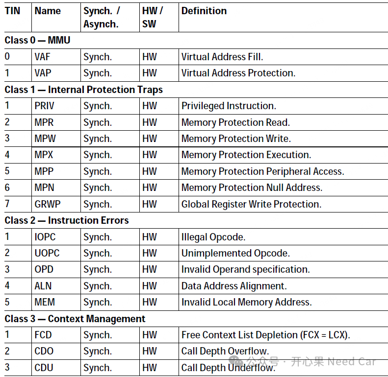
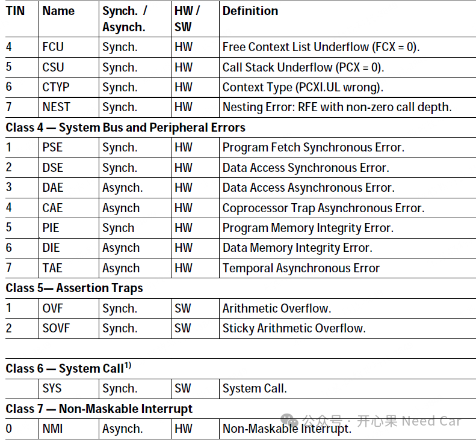
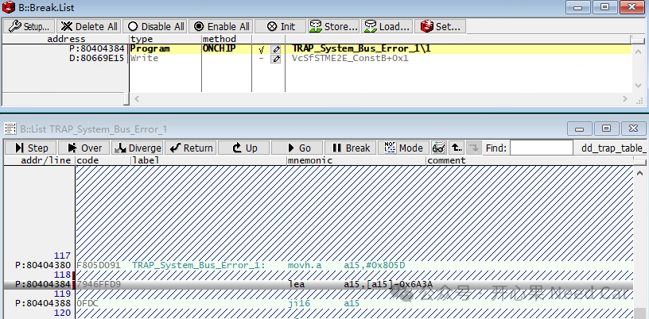
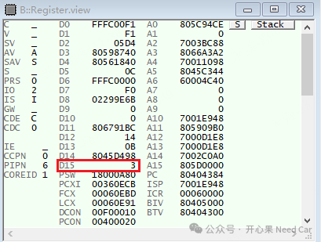
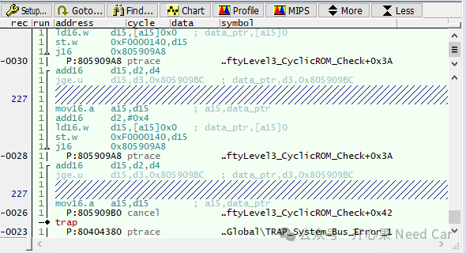
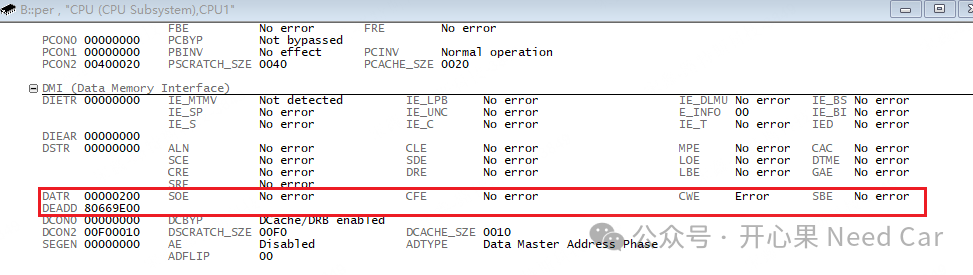
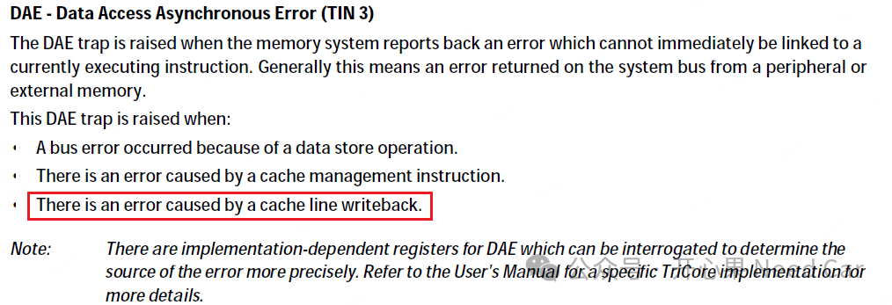
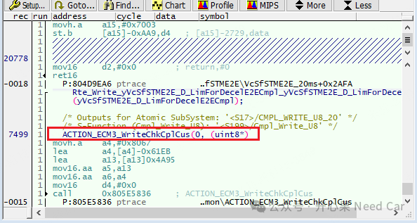
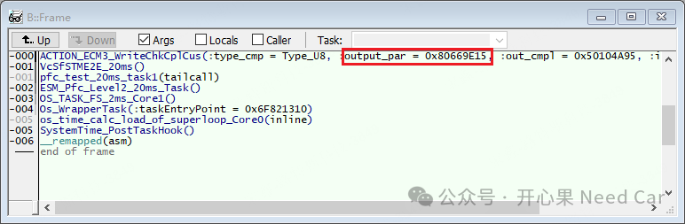
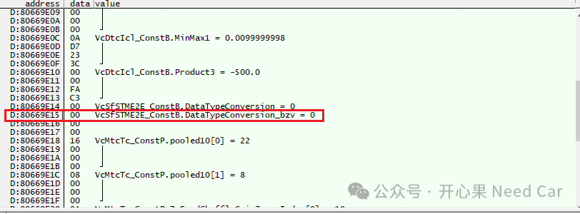

软件Trap问题，我们并不陌生。对于Trap，有同步（Synchronous）和异步（Asynchronous）之分。Synchronous Trap，通过栈可以看出问题触发位置，问题原因一般容易锁定。但是，对于Asynchronous Trap的问题点锁定就有点让人“犯迷糊”，如果问题点并不是你开发的模块，锁定问题点就又增加了点难度。本文，聊一下Asynchronous Trap的一些思考。我们知道，TC3xx主核的每个CPU均有8个TCN（Trap Class Number），每个TCN又包含不同数量的TIN（Trap Identification Number），如下所示：


如上可以看出，大部分的Trap属于同步Trap，异步Trap均由硬件触发。Asynchronous Trap之所以难排查，主要是因为某些结果间接来源于之前执行的指令，但与这些指令的直接关联信息已经丢失。比如，NMI（Non-Maskable Interrupt，不可屏蔽中断），由外部事件触发异常，无法记录问题的具体细节。问题表现：Core1最终进入System Bus and Peripheral Errors (Trap Class 4)，如下所示：
其实，程序复位时，我并清楚具体是哪个Core的哪个TCN触发，所以，我就用比较笨的办法：把每个Core的Trap函数都设置一下断点，进入断点以后也就锁定了是哪个Core的哪个TCN，知道了TCN以后就可以通过对应Core的D15寄存器锁定TIN，比如，本文Core1 D15记录为3，即：TIN = 3，所以，也就确认了问题是Core1 TCN4的TIN3，D15寄存器记录示意如下：
TCN4的TIN3，即：DAE - Data Access Asynchronous Error，所以，这个问题属于硬件的异步Trap。
（二）Asynchronous Trap问题，Stack还可信吗
进入Trap断点，自然而然的就会查看栈（stack），如下所示：
除了观察stack，我还会追查问题Core的trace，本文Core1的Trace如下所示：

如上，不管是Stack还是Core1的Trace，似乎都在"暗示"问题发生时，Core1正在执行FctlSftyLevel3_CyclicROM_Check()函数，那么，能否说明问题就是这个函数内的某一步触发的呢？答：不能。为什么不能呢？答：回到异步Trap的特点：Trap发生时，某些结果间接来源于之前执行的指令，但与这些指令的直接关联信息已经丢失，所以，并不能说问题就是由FctlSftyLevel3_CyclicROM_Check()函数触发。既然是异步Trap，Stack又不可信，是不是可以通过对应Core的DEADD（Data Error Address Register）、DATR（Data Asynchronous Error Trap Register）等寄存器去进一步锁定问题呢？进一步排查Core1的DEADD和DATR寄存器，记录信息如下所示：
通过DATR寄存器，可以确认问题是由CWE（Cache Writeback Error）引发，TCN4的TIN3描述问题原因如下：
注意，手册中有这样的描述：
| DAE traps are inhibited if the DATR register is non-zero. |
解释：如果DATR寄存器非零，则DAE Trap禁用。分析了DATR寄存器，那么DEADD记录的错误地址可信吗？因为DEADD的作用是记录trap的地址信息，如果这个地址是问题源，问题也就迎刃而解了。但是，如上的解释可以看出，DATR寄存器非零时，DEADD寄存器记录的信息也就没有意义了。所以，异步Trap至此就没了更多的可用信息。提示：同步错误可以查看DSTR（Data Synchronous Error Trap Register）。目前为止，我没有更好的手段直接锁定异步Trap问题的触发源，只能上笨办法，具体排查步骤：
2、针对差异进行代码屏蔽，收窄问题范围，锁定问题所在函数；3、进一步在函数内屏蔽程序或者断点，锁定问题所在位置。

问题原因锁定如下：程序对PFlash地址进行了写操作，如下所示：

4、小结
回过头来看问题的原因，似乎觉得这不难。就是一个基本功不扎实的问题，然而就是这样一个问题，工程上并不少见。
点击下方关注，一起聊聊Autosar/嵌入式，如果需要，联系作者进群，给你更专业的解答